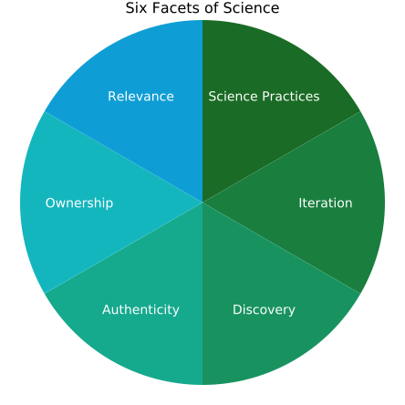

Scientific Teaching
Estimated time to complete: 40 minutes
Module Learning Objectives
By the end of this module, you will be able to...
- Define scientific teaching.
- Advocate for how scientific teaching approaches can support student learning, lead to increased diversity in STEM, and bring joy to teaching.
- Make an argument for the connection between effective science education, science, and teaching.
- Use the six facets of science to demonstrate how scientific teaching manifests the scientific process for students and instructors.
- Evaluate your current course (or a course you took) and propose where to increase the six facets of science.
Scientific Teaching Defined
Scientific teaching is both the teaching of science and the science of teaching. An instructor who practices scientific teaching:
- Engages students in authentic practices of science
- Approaches their teaching with the spirit of scientific research
Scientific teaching combines intentional instructional decisions with iterative, evidence-based improvements to create inclusive learning experiences, which, in turn, support students learning science.
Goals of Scientific Teaching
The goals of scientific teaching are to:
- Infuse scientific thinking into teaching and learning.
- Increase diversity in STEM.
Embedded in this undertaking is a challenge to all scientists to bring to teaching the critical thinking, rigor, creativity, and spirit of experimentation that defines research (Handelsman et al., 2004). This includes drawing on the research about effective teaching and learning to shape our approaches.
Scientific teaching also posits that teaching science should capture the spirit of discovery in the classroom in ways that are inclusive to all students. Teaching scientifically supports student learning, promotes student persistence, and leads to increased diversity in STEM
Why Scientific Teaching?
Effective Science Education
Effective science education is equitable science education: Scientific teaching is needed to create a diverse and creative workforce equipped to address emerging global and local problems. Increasing diversity in STEM requires increasing representation of historically excluded groups. The future workforce should match the demographics of the world’s citizens and draw from underutilized talent in all demographic groups.
Effective science education is equitable science education.
Yet inequities plague higher education, quelling STEM workforce diversity. Opportunity gaps between overrepresented and underrepresented students have been called “one of the most urgent and intractable problems in higher education” (Bensimon, 2005). The inequities in college science education continue to deny opportunities to historically excluded communities (HECs): groups and individuals who have traditionally been underrepresented and denied full rights, privileges, and participantion in STEM education. HECs include but are not limited to women, people of color, people with disabilities, caregivers, LGBTQIA+ students, first-generation students, and low-income students (Asai, 2020).
To achieve an equitable STEM workforce, we must address the structural, individual, intentional, and unintentional biases that:
- Discourage HEC students from pursuing STEM
- Limit instructors, departments, and institutions from actively working toward challenging systematic inequalities
- Obscure “opportunities for all faculty and all students to analyze power and privilege in classrooms, in peer groups, in departments, in disciplines, in institutions, and in society” (Chikkatur and Valle, 2023)
What the US Reports Say about Science Education
For decades, numerous reports have called for science education reform, citing overwhelming evidence that effective and equitable science education requires widespread adoption of evidence-based practices. Highlights of these evolving arguments include:
- Science for All Americans (Rutherford and Ahlgren, 1991) called for a scientifically literate public and charged higher educators with teaching scientific “habits of mind.” The report noted that employers demanded efficient and effective employees with problem-solving capabilities, the ability to work in teams, and analytical skills, yet students were unprepared for these demands.
- Bio2010 (BIO2010, 2003) recommended that science curriculum should reflect the nature of science as a dynamic, interdisciplinary, and rapidly changing frontier, rather than a static body of facts.
- Vision and Change (Bauerle, 2011) furthered the Bio2010 recommendations by enumerating key biology concepts and science skills, encouraging teaching practices that focused on these concepts and skills, and calling for more research in STEM higher education.
- Engage to Excel (Advisors on Science and (US), 2012) illuminated national STEM workforce shortages, including racial and gender disparities. The report purported that addressing these weaknesses required improving undergraduate STEM education based on evidence. The report recommended widespread adoption of active learning strategies and undergraduate research experiences.
- Indicators for Monitoring Undergraduate STEM Education, a National Academies report, reinforced goals for improving the quality and impact of undergraduate STEM education (Dibner et al., 2018) by engaging students in evidence-based educational practices. They broadened the call for reformed STEM education to include equitable access to opportunities, in addition to using inclusive practices.
- Levers for Change (the Advancement of Science and others, 2019) noted that the benefits of active learning extended beyond knowledge and skills to include “attitudes, sense of belonging, and persistence in STEM” and again pleaded for widespread adoption of evidence-based strategies to support students.
- The Federal Strategic Plan for Advancing STEM Education and Cultivating Talent (Marsh and Hattie, 2002) proposed organizing a plan for coordinating federal agencies across several areas: STEM engagement, teaching and learning, workforce development, research and innovation, and environments. The report called out course-based research experiences as an effective tool for providing students with access and opportunity to STEM research.
- In Equitable and Effective Teaching in Undergraduate STEM Education: A framework for institutions, educators and disciplines, the National Academies of Sciences, Engineering, and Medicine (NASEM 2025) stated that the lack of widespread adoption of evidence-based teaching perpetuates educational disparities. The report recommended that students actively engage in disciplinary learning by leveraging student interest and identities, accounting for sociocultural influences, and providing transparency in process and intentions.
Despite these recommendations, 70% of STEM instructors have reported extensive use of lecturing in their courses, rather than evidence-based instructional strategies (the Advancement of Science and others, 2019; Stains et al., 2018), citing the absence of formal pedagogical training as one of the main reasons (Walczyk et al., 2007). The good news is that faculty who receive pedagogical training are more likely to seek innovative teaching methods and implement learner-centered practices (Marsh and Hattie, 2002; Walczyk and Ramsey, 2003).
STEM has an Equity Problem
More than half of the approximately 600,000 college students who intend to major in STEM switch to other fields (Thiry et al., 2019; Handelsman et al., 2022).
Although a disheartening 42% of white students leave STEM majors, the problem is much worse for students of color: for example, 58% of Latine students and 66% of Black students leave STEM (Riegle-Crumb et al., 2019).
The differential pattern of exclusion from STEM affects students not only according to race and ethnicity; talented college students from all HECs leave at higher rates (Thiry et al., 2019).
Most of those who leave a STEM major have the interest, confidence, and aptitude to be successful in STEM, but early classroom experiences can dampen their interest and actively exclude them from persisting (Thiry et al., 2019; Estrada et al., 2019). Their departures after gateway STEM courses represent a major talent drain from the system. To achieve an equitable educational system, we must address the structural and individual factors—including both intentional and unintentional biases—that discourage HEC students from pursuing and succeeding in STEM.
Systemic inequities in US higher education are compounded when we fail to employ evidence-based practices. Therefore, this Scientific Teaching Course focuses on what instructors have agency to change: course design and the classroom environment.
Reflection: Role, Equity, and Intention
Call to mind a course you are teaching, have taught, or are planning to teach.
Which of the following best describes your role?
- My role is to cover the course content and teach skills.
- My role is to engage students in learning content and developing skills.
Which of the following best describes your course’s approach to equity?
- The course climate is fair because it is the same all students.
- The course climate meets students where they are and supports them in engaging with the content and developing skills.
What aspects of your course are you most excited to revise or improve through this Scientific Teaching Course?
Effective Science
Effective science is inclusive science. To address the increasingly complex science and technology related issues in our world, we need to ensure that students develop a working understanding of how science is done. The rapid expansion of scientific knowledge means students need to be prepared to solve global problems and navigate the difference between evidence-based claims and opinions. Whether they major in biology, art history, math, or elementary education, college-educated students should understand the basic principles of the world around them. When students actively engage in scientific practices, they develop a more robust scientific self-efficacy and identity (Estrada et al., 2011), contribuing to increased persistence in STEM. Equally important, students need to appreciate the origins of scientific information, think critically about new problems and situations, and sustain a lifelong curiosity about the world around them.
Effective science is inclusive science.
Broadening participation in STEM is essential for asking meaningful questions, addressing inequities, and ensuring that STEM benefits everyone. Diversity within the scientific community supports the broadening of participation in STEM fields. When students witness diverse scientist identities and engage in solving real-world problems, they connect with and envision themselves as part of the scientific community [ref].
Three factors—positive self-efficacy, identity, and connection with scientific values—lead to increased persistence in STEM, especially for students from communities that have been historically excluded (Estrada et al., 2011).
Effective Teaching
Effective teaching helps students develop science skills. Authentically integrating science into teaching requires moving beyond a mindset of “covering the content” and toward designing experiences where students “uncover the content.” This active engagement with the content helps students develop the essential knowledge, skills, and habits of mind that align with how science is practiced, building their scientific self-efficacy and identity.
Effective teaching helps students develop science skills.
Instructors who identify overarching concepts and broad themes can help students to organize complex information and deepen their understanding. They also help students integrate scientific knowledge with authentic practices and account for students' diverse identities, beliefs, and experiences. This shift doesn’t mean students don’t learn facts; it means they learn how to organize these facts and apply what they have learned in authentic contexts. In short, effective teaching is scientific teaching.
The Three I’s of Scientific Teaching
Effective teaching is intentional, inclusive, and iterative. Effective teaching creates learning experiences for students to engage in doing science—more on that in upcoming modules. Effective teaching also means approaching your teaching with the same rigor and spirit—the same intentionality, inclusiveness, and iterativeness—of your scientific research.
Scientific teaching is intentional, inclusive, and iterative.
Scientific teaching brings a philosophy and framework to teaching that makes the process more rigorous, reflective, and evaluative. Drawing from discovery and evidence-based strategies, scientific teaching parallels science research. Rather than allowing a haphazard approach to designing daily lectures, scientific teaching emphasizes intentional course-level planning, using empirical evidence and data to inform instructional decisions. This approach allows courses to evolve over time using student learning as the driving evidence.
Like science, these teaching principles take time to practice and implement. Also like science, we advocate that you select from practices that demonstrate positive student outcomes and carefully evaluate which approaches will work best in your context.
Reflection: Motivations
Which reasons for incorporating the practices of science into your course are most motivating for you personally?
- Prepare students for the scientific workforce and challenges of today’s society
- Cultivate informed citizens
- Foster critical thinking
- Increase interest in science
- Humanize science
- Broaden participation in science
- Increase equity of science
Why do you believe you selected the reasons above that you did? What about them motivates you?
A Framework for Scientific Teaching
The core framework for scientific teaching is the process of science itself—how we ask and investigate questions, and decide which questions to explore.
Most of us are familiar with the scientific method, which asks us to make an observation, develop a hypothesis, design an experiment, collect and analyze data, and summarize findings. However, anyone who engages in science knows there is more to science than experimentation.
The six facets of science expand on the scientific method to include other hallmarks of research and discovery, contextualized for undergraduate STEM education. The facets below are largely derived from the literature around undergraduate research [ref NAP, Dolan etc] and provide a framework for engaging students in scientific inquiry through the courses that we teach.
The Six Facets of Science

The six facets of science include:
- Science practices: Ask questions, generate hypotheses, carry out investigations, analyze and communicate data
- Iteration: Identify and resolve problems in multiple cycles; replicate experiments
- Discovery: Engage in research tasks that have unknown outcomes
- Authenticity: Engage in innovation and collaboration to address original research questions, and do authentic scientific tasks
- Ownership: Develop a sense of responsibility for and personal connection to the research
- Relevance: Apply the outcomes and applications of scientific discoveries to real world-contexts, or ask questions with scientific relevance.
Embodying the Facets of Science
Compare the following two course schedules with the facets of science in mind.
To what extent does each schedule embody each of the facets of science? Rate them as high, medium, or low.
- Science practices
- Iteration
- Discovery
- Authenticity
- Ownership
- Relevance
Click here to show the Course 1 Schedule
Week 1:
- Before class, complete a reading and a quiz.
- In class we will discuss: What are the facets of science?
- And in Lab: Orientation to the lab, research, and discovery by diverse scientists; and importance of lab safety and sterile technique.
Week 2:
- Before class, complete a reading and a quiz.
- In class we will discuss: Evolution.
- And in lab: Ask 3 research questions about antibiotic discovery. Pick one. Generate a hypothesis and design an experiment to test it.
Week 3:
- Before class, complete a reading and a quiz.
- In class we will discuss: Antibiotic discovery and resistance.
- And in lab: Test your hypothesis: Collect and plate soil samples. Include replicates.
Week 4:
- Before class, watch a video and complete a worksheet.
- In class we will discuss: What role does evidence play in discovery?.
- And in lab: Test your hypothesis: Observe and record data. Re-test if needed.
Week 5:
- Before class, complete a reading and a quiz.
- In class we will discuss: What role does diversity play in discovery?.
- And in lab: Test your hypothesis: Analyze data. Draw graphs, figures, and tables.
Week 6:
- Before class, complete a take home mid-term exam.
- In class we will check-in about the exam.
- And in lab: Submit a summary of results so far. Do they support your hypothesis? Propose your next experiments; get feedback from lab partners.
Click here to show the Course 2 Schedule
Week 1:
- To prepare for lecture, read chapters 1 and 2.
- In lab: Lab safety.
Week 2:
- To prepare for lecture, read chapters 3 and 4.
- In lab: Pipetting.
Week 3:
- To prepare for lecture, read chapters 5.
- In lab: Sterile technique.
Week 4:
- To prepare for lecture, read chapters 6 and 7.
- In lab: Plating microbes.
Week 5:
- To prepare for lecture, read chapters 8.
- In lab: Gram positive and negative bacteria.
Week 6:
- In class we will complete Exam 1 (multiple choice).
- In lab: Lab report due.
Reflection: Facets of Science
Call to mind a course you are teaching, have taught, or are planning to teach.
To what extent does your course schedule embody each of the facets of science? Rate them as high, medium, or low.
- Science practices
- Iteration
- Discovery
- Authenticity
- Ownership
- Relevance
Scientific Teaching in Practice
Scientific teaching offers a natural structure for teaching that parallels scientific research, as well as the scientific practices we are asking our students to learn. Teaching science can mimic science practices in many ways.
- Science practices: Both researchers and instructors can develop and use models, plan and carry out investigations, analyze and interpret data, engage in scientific arguments and construct explanations.
- Iteration: Instructors can identify problems, improve materials, and repeat the process to resolution.
- Discovery: Engaging in scholarship of teaching and learning allows instructors to propose hypotheses and make inquiries.
- Authenticity: Instructors engage in innovation and experimentation, while building on previous knowledge.
- Ownership: Instructors gain agency and develop a sense of responsibility for outcomes.
- Relevance: Instructors can share their findings with others and work on education reform that has applications beyond their own classroom.
The Scientific Teaching Course is designed to help you put all these ideas into practice in ways that make sense for you and your context. It provides an overview of the complex and expansive landscape of evidence, approaches, methods, and theories related to STEM teaching in higher education. It also highlights the role of systemic barriers in course climate – or learning environments – and provides tools to remove them.
The aim is to empower you, the instructor, to customize the approaches for your own identities, students, content, and contexts, which in turn, can bring purpose and joy to teaching.
These changes take time. Try re-working small pieces of your course using the provided template. As you add and understand the basic tenets of scientific teaching, continue modifying.
Organization of the Scientific Teaching Course
This course is organized around interactive modules that provide guidelines, reflective moments, hands-on practice, and immediate application. The modules build on and reinforce each other:
- Scientific Teaching explains why change is needed and lays a foundation of evidence-based theories.
- Inclusive Learning provides a deeper dive into theories and practices for equitable learning.
- The modules on Course Design, Learning Experiences, Summative Assessment, and Course Structure turn theory into actionable practice.
- The modules on Scientific Teaching Revisited and Institutional Transformation offer suggestions for lifelong learning and iterative improvement as a scientific teacher, as well as ideas to promote reform beyond your course.
Summary of Scientific Teaching
- Scientific teaching is both the teaching of science and the science of teaching.
- The goals of scientific teaching are to make teaching and learning more scientific and increase diversity in STEM.
- Scientific teaching means being intentional, inclusive, and iterative.
- Myriad reports call for changes in teaching practices to foster inclusive learning environments.
- STEM education reform can happen at many levels. As instructors, we have agency to effect change in our courses.
- Students who engage in authentic science practices are more likely to persist in STEM.
- Scientific teaching offers a natural structure for teaching that parallels scientific research, as well as the scientific practices we are asking our students to learn.
Takeaways from Scientific Teaching
Identify two key takeaways that resonate most with you after completing this module.